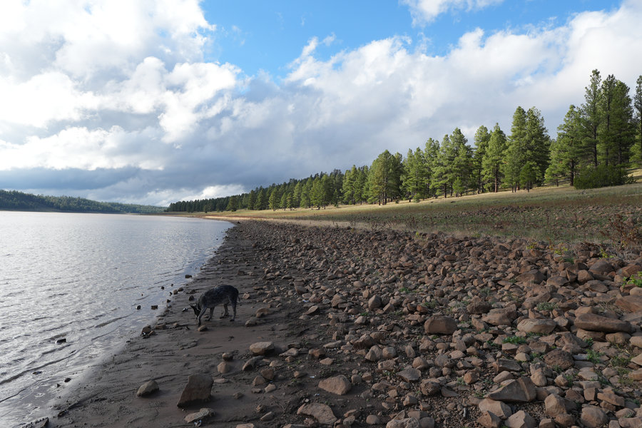

Woods Canyon Lake Campground
The most obvious Rim answer for a reason: pines, developed loops, boat access nearby, and a lake that anchors the whole weekend.
 By Chris Follin
By Chris FollinROUNDUP
These are the Arizona lake trips I would actually sort through first: easy Rim weekends, White Mountains comfort picks, Flagstaff water access, and one southern Arizona campground that earns the drive. The right choice depends less on the prettiest photo and more on water access, shade, services, wind, and how much crowd energy you are willing to absorb.
Lake camping is easy to oversell. Some campgrounds are true water-first weekends; others are better treated as comfortable bases with a lake nearby. I would pick differently for a first family trip, a quiet fishing weekend, a quick Flagstaff reset, and a shoulder-season escape from southern Arizona heat.
The most obvious Rim answer for a reason: pines, developed loops, boat access nearby, and a lake that anchors the whole weekend.

Better when the lake matters more than convenience. Pack lighter, expect rougher logistics, and you get a calmer Rim feel back.

The developed White Mountains option when showers, hookups, shade, and easy lake access matter more than a rugged camp feel.

Good for a low-friction lake weekend: shoreline close by, town backup nearby, and enough structure to keep the trip simple.

A useful developed campground for southern Arizona: close lake access, marina nearby, and a better shoulder-season rhythm than the Rim.

A practical Flagstaff lake-corridor choice, not true lakeshore camping. Best when you want morning water time and nearby developed campgrounds.
This is the sorting table I would use before clicking into detailed campground notes.
| Camp | Drive / Region | Services | Shade | Water Access | Wind / Crowds | Best Season |
|---|---|---|---|---|---|---|
| Woods Canyon Lake | Mogollon Rim, east of Payson | Developed campground loops; lake store, boat ramp, and rentals nearby | Strong pine shade in camp | Very good; lake is the reason to be there | Moderate wind, high weekend crowd risk | Late spring through fall |
| Bear Canyon Lake | Mogollon Rim, rougher access than Woods Canyon | Primitive lake-area camping; no potable water | Good pine cover, but setup depends on the site | Strong if you pack light and accept the carry | Less crowd pressure, more logistics friction | Late spring through fall |
| Fool Hollow | Show Low / White Mountains | Developed state-park style comfort with showers and RV-friendly loops | Mixed shade; better in established loops | Easy shoreline and boat access | Medium-high crowd risk on nice weekends | Spring through fall; summer is the comfort win |
| Show Low Lake | Show Low / White Mountains | Developed campground with simple town backup nearby | Mixed shade; choose loops carefully | Close shoreline and an easy lake path | Moderate crowd risk, less remote feel | Late spring through fall |
| Lakeview - Parker Canyon Lake | Southern Arizona, southeast of Tucson | Developed campground; marina nearby, seasonal water availability varies | Mixed oak and open sites | Good; the lake and marina are close enough to shape the day | Exposed in wind, usually calmer than Rim crowds | Spring and fall, with summer heat checked by elevation |
| Lake Mary area | Flagstaff lake corridor | Day-use lake access; camp in nearby developed campgrounds | Better at nearby pine campgrounds than on the shoreline | Good for day use, weak for true lakeshore camping | Afternoon wind and variable water levels are the big watch-outs | Late spring through fall |
The better lake pick gets obvious once you name the tradeoff.
WOODS CANYON LAKE
Choose: you want pines, developed sites, morning water time, and an easy recommendation for mixed-experience campers. Skip: the trip only works if the campground feels quiet or uncrowded.
BEAR CANYON LAKE
Choose: you can pack light, carry gear, and be self-contained. Skip: you need potable water, easy car-to-table unloading, or a polished campground loop.
FOOL HOLLOW
Choose: showers, hookups, paved-road simplicity, and easy lake access are part of the point. Skip: you are trying to make the weekend feel primitive or remote.
SHOW LOW LAKE
Choose: you want a lake path, town nearby, and a forgiving campground for a simple White Mountains weekend. Skip: you want the campsite itself to be the scenic showpiece.
LAKEVIEW
Choose: you want a developed lake campground without committing to a Rim or White Mountains drive. Skip: wind is in the forecast or you need dense shade at every site.
LAKE MARY AREA
Choose: you want Flagstaff lake time during the day and are happy camping at Pinegrove, Lakeview, Ashurst, or another nearby campground. Skip: you want true lakeshore camping from your site.